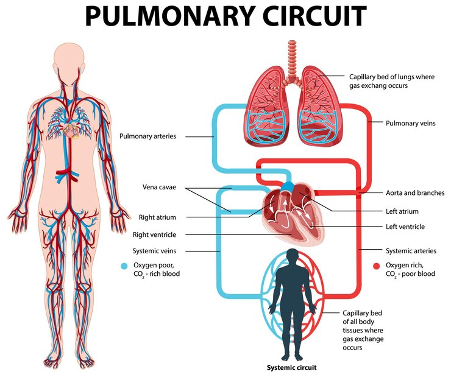

The circulatory system is responsible for transporting blood throughout the body, delivering oxygen and nutrients, and removing waste products. It plays a crucial role in maintaining the body's overall health.
The circulatory system helps in transporting oxygen, nutrients, and waste products throughout the body. It includes the heart, blood vessels, and blood.
Regular exercise, a balanced diet, and avoiding smoking can help keep your circulatory system in good shape. It’s also important to manage stress and monitor blood pressure.